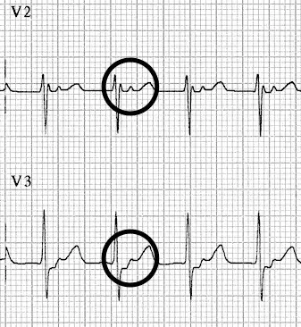
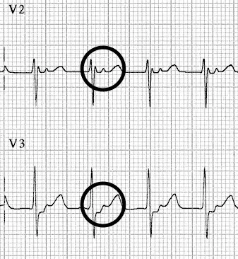

AVNRT
- The most common supraventricular arrhythmia in humans. AVNRT is typically paroxysmal and may occur spontaneously or upon provocation with exertion, caffeine, alcohol, beta-agonists (salbutamol) or sympathomimetics (amphetamines). It is more common in women than men (~75% of cases occurring in women) and may occur in young and healthy patients as well as those suffering chronic heart disease
- The tachycardia typically ranges between 140-280 bpm and is regular in nature. It may self-resolve or continue indefinitely until medical treatment is sought
- In comparison to AVRT, which involves an anatomical re-entry circuit (Bundle of Kent), in AVNRT there is a functional re-entry circuit within the AV node
AVRNT Subtypes
Different subtypes vary in terms of the dominant pathway, and the R-P interval, which is the time between anterograde ventricular activation (R wave) and retrograde atrial activation (P wave):
1. Slow-Fast AVNRT (80-90%). Associated with slow AV nodal pathway for anterograde conduction and fast AV nodal pathway for retrograde conduction. The retrograde P wave is obscured in the corresponding QRS or occurs at the end of the QRS complex as pseudo R’ or S waves
1.  2. Fast-Slow AVNRT (10%). Associated with Fast AV nodal pathway for anterograde conduction and Slow AV nodal pathway for retrograde conduction. Due to the relatively long ventriculo-atrial interval, the retrograde P wave is more likely to be visible after the corresponding QRS and before the corresponding T wave.
1. 
3. Slow-Slow AVNRT (1-5%). Associated with Slow AV nodal pathway for anterograde conduction and Slow left atrial fibres as the pathway for retrograde conduction. Tachycardia with a P-wave seen in mid-diastole, effectively appearing “before” the QRS complex. May be misinterpreted as sinus tachycardia.
2. Fast-Slow AVNRT (10%). Associated with Fast AV nodal pathway for anterograde conduction and Slow AV nodal pathway for retrograde conduction. Due to the relatively long ventriculo-atrial interval, the retrograde P wave is more likely to be visible after the corresponding QRS and before the corresponding T wave.
1. 
3. Slow-Slow AVNRT (1-5%). Associated with Slow AV nodal pathway for anterograde conduction and Slow left atrial fibres as the pathway for retrograde conduction. Tachycardia with a P-wave seen in mid-diastole, effectively appearing “before” the QRS complex. May be misinterpreted as sinus tachycardia.
AVNRT Subtypes
- No visible P waves? –> Slow-Fast
- P waves visible after the QRS complexes? –> Fast-Slow
- P waves visible before the QRS complexes? –> Slow-Slow
AVRT
- "Atrioventricular Re-entrant Tachycardia"
- Arises due to an accessory pathway: a strand of myocardium connects the atria and ventricles, bypassing the AV node
- Two types based on the direction of conduction: 1) Orthodromic- antegrade conduction via the AV node (Left) 2) Antidromic- antegrade conduction via the accessory pathway (Right)
Orthodromic AVRT
Conduction is via AVN, leading to a narrow complex rhythm (in the absence of a BBB). Rate typically 200-300 bpm, retrograde P waves are visible with a long RP interval (>70 ms) which differentiates it from typical AVNRT (retrograde P waves are early or buried in the terminal QRS).

Antidromic AVRT
Conduction is via an accessory pathway, leading to a regular wide complex rhythm which can be difficult to distinguish from VT. This rhythm can be difficult to distinguish from VT, and if there is any doubt, we should presume a diagnosis of VT and treat accordingly. Procainamide (class I) would be our first line antiarrhythmic. Ibutilide (class III) and amiodarone are second-line options, but their effectiveness is less established.

References
- LITFL